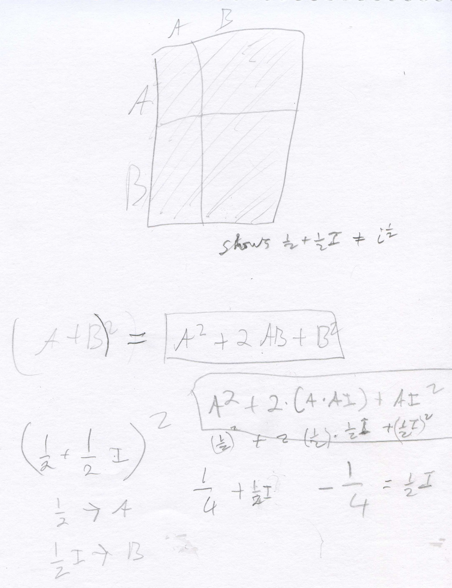
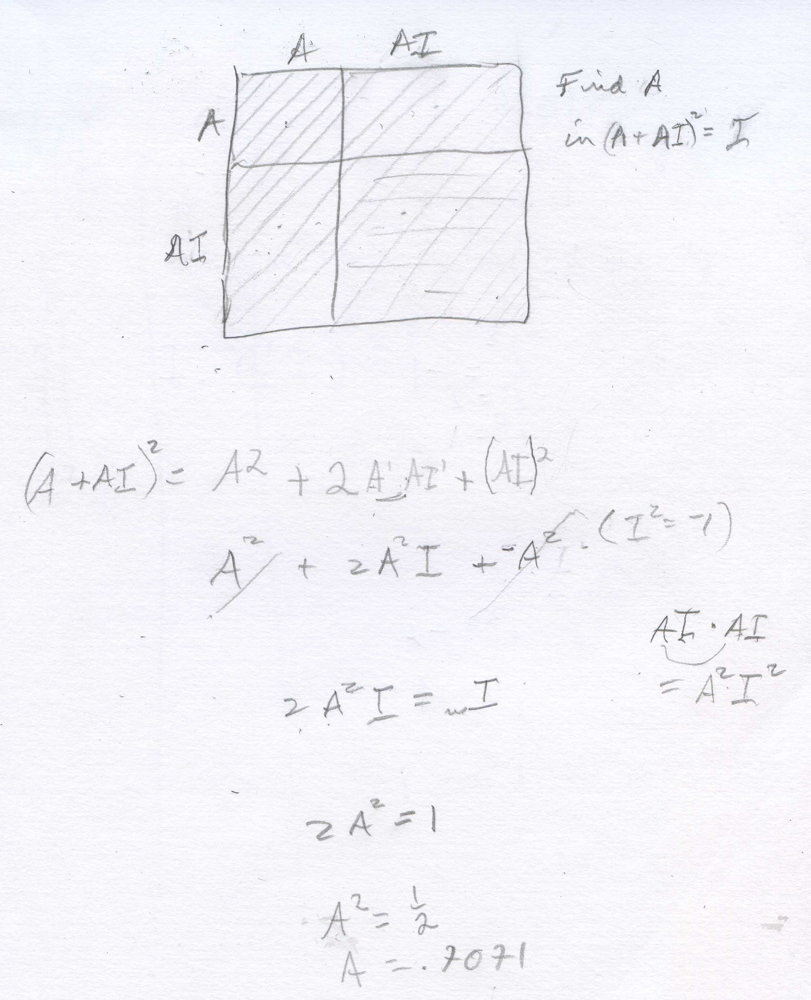

Shaleen, a 6th grader, graphs in, finds i1/2, and finds the graph is not a square!
Don asked Shaleen to graph in for n = whole numbers. [Note: the vertical axis is the imaginary axis with the scale 4 units = 1i, and the horizontal axis is the real axis, with the scale 4 units = 1]. He knew that i0=1, i1 =i, i2 =-1, i3 =-i and i4 =1, so he plotted those points below. Most youngsters believe right away that these points are the corners of a square, which he drew. When Don asked Shaleen where i1/2
would be, he put a point half-way between i0=1 and i1 =i on the square. This point is represented by the complex number 1/2 + (1/2)i and he thought would be i1/2 . Don said that if i1/2 is squared, that would = (i1/2)2 which = i because raising a power to a power, you multiply the exponents (which he knew). So Don had Shaleen squared 1/2 + (1/2)i below.

Don uses the area model for (A+B)2 = A2+2AB+B2, and Shaleen substituted 1/2->A and 1/2 i ->B. He found that [1/2 + (1/2)i]2 = 1/2 i, NOT i. So 1/2 + (1/2)i is not = i1/2 ! At this point Don suggested a way Shaleen could find i1/2 . Since the point is half-way between i0=1 and i1 =i, we can use the point (A + Ai) to keep it on the y=x line, square it and set that number equal to i to find A. Shaleen proceeded to do this below.

Note, if 2A2i = something times i, the something must = 1, so 2A2 = 1. He got A= the square root of (1/2) = .707... So i1/2 = .707..+ .707...i, which Shaleen was able to plot on the first graph, repeated below. Don had Shaleen use the calulator to find the sqrt(2) then divide by 2 and he got .707... THAT NUMBER AGAIN! They talked about if he knows that point, what other points can he plot? He plotted points at i1.5, i2.5 = -.707..- .707..i , and i3.5 = .707..- .707..i .
At one point Shaleen put in the calculator -.707..- .707..i, hit ENTER, and got -1- i which he knew was wrong. What happened? It turned out that the calculator was set for 0 decimal places, and had rounded off the numbers to 1. What is (.707..+ .707..i)2 ? Shaleen got out the compasses and constructed a circle of radius 1 that went through these points. Don drew a right triangle in the first quadrant, mentiond that the length of the hypotenuse was 1, the radius of the circle, then asked Shaleen the measure of the other 2 angles, besides the right angle. They turned out to be 45' each because the sides are both equal to .707..Then he asked him to find the length of the 2 sides that form the right angle. At first he said 1, because 12 + 12 = 12 but quickly realized that couldn't be and said x2 + x2 = 12 and 2x2 = 1, so x = sqrt (1/2) = .707... Don had Shaleen look up on his calculator the cosine of 45' which is .707.. We had to stop, and will continue the trigonometry we had started earlier.
Fine work Shaleen!